Geospatial Systems CDT Annual Assembly, 7-8 September, Newcastle University.
Modelling Urban Dynamics with Agents, Machine Learning, and Foundation Models
Nick Malleson, University of Leeds, UK
n.s.malleson@leeds.ac.uk
Slides available at:
https:/nickmalleson.github.io/presentations.html
Thanks: Jack Liddle, Wenhua Jiang, Molly Asher, Yannick Oswald, Keiran Suchak, Minh Kieu, Patricia Ternes, Robert Clay, Jonathan Ward, Dan Tang, Kevin Minors, Andrew West, Thanh Bui Quang, Naomi Golzari Osguie, Alison Heppenstall, Andrew Crooks, Ed Manley, Alexis Comber
Urban Dynamics
Cities are driven by the movement of people
Crowd and pedestrian dynamics matter for:
safety and crowd management in busy public places; transport, retail vitality and the design of public space; understanding how neighbourhoods are changing.
But these are complex systems: hard to observe, hard to predict
This talk covers four complementary approaches, and one emerging one:
Overview
1. Unpacking pedestrian dynamics – Principal Component Analysis on footfall counts
2. Predicting pedestrian volumes – machine learning with diverse urban data
3. Simulating crowds in real time – agent-based models and data assimilation
4. Reasoning agents – opportunities for integrating LLMs with ABMs
5. Aside: Geospatial foundation models
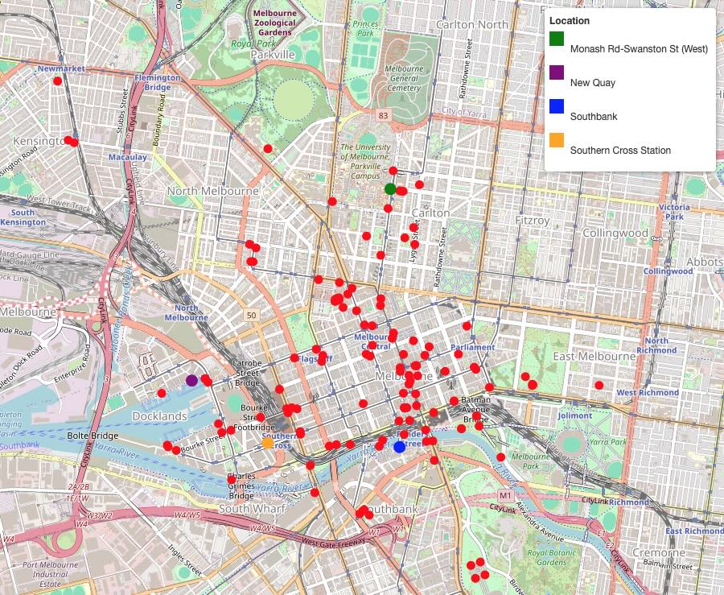
Melbourne Footfall Counters
Fantastic data available through the Melbourne Open Data Portal
94 sensors counting hourly footfall, some date back to 2009
Numerous additional open data sets, including:
weather; street furniture (benches, bins etc); buildings and landmarks
Both of the next two parts use these data
Part 1
Unpacking aggregate pedestrian behaviour with Principal Component Analysis
Jack Liddle, Wenhua Jiang, and Nick Malleson
Photo attributed to bobarcpics (CC BY 2.0)
Overview
Footfall data: counts of pedestrians at numerous locations
Principal Component Analysis (PCA) to isolate key temporal patterns (commuting, shopping, having lunch, etc.)
Reveals surprisingly clear patterns
Can be used to better understand the evolution of urban footfall dynamics
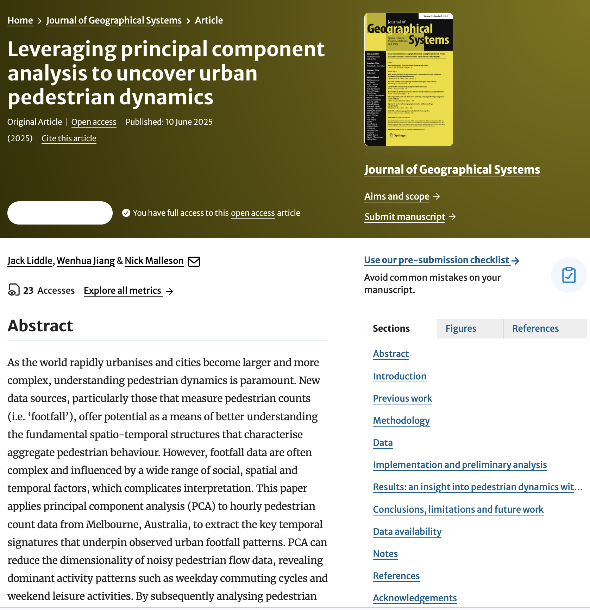
Paper
Liddle, J., W. Jiang, and N. Malleson (2025). Leveraging Principal Component Analysis to Uncover Urban Pedestrian Dynamics. Journal of Geographical Systems DOI: 10.1007/s10109-025-00469-0
Footfall Data
Mean daily and weekly footfall counts
Morning & evening peaks; weekday v.s weekend
Some regularity but also huge variation
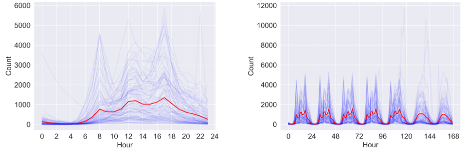
Principal Component Analysis (PCA)
Technique for reducing dimensionality in datasets
Isolate significant features; the 'principal components'
Raw data can be approximated by a linear combination of component loadings
Here: components are vectors of length 24 (or 168 if we look at weeks)
How many principal components?
Proportion of explained variance
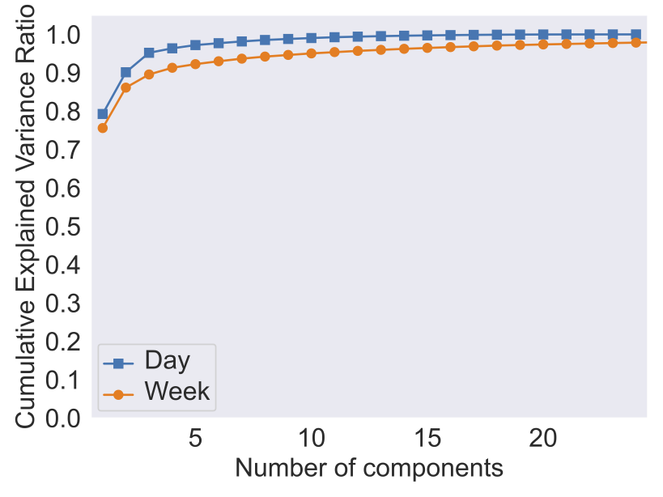
Results (i): Most Important Components
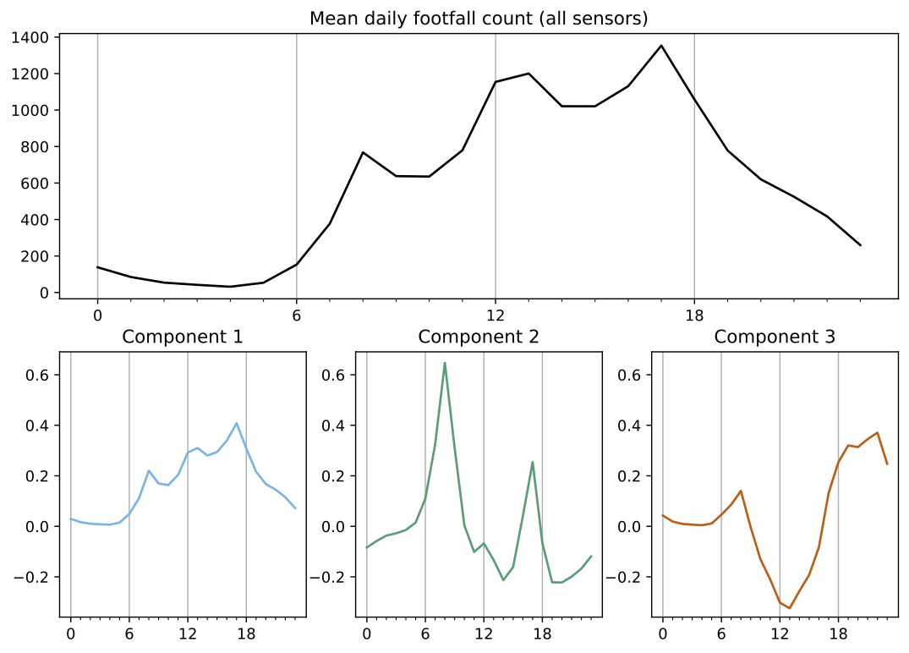
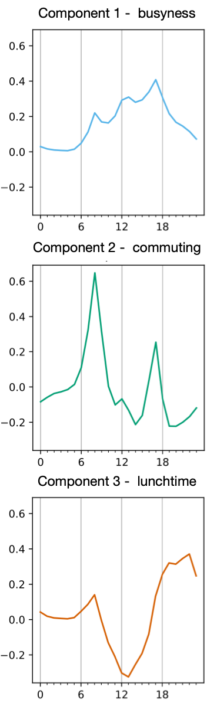
Most Important Components
Component 1 - busyness
Almost identical to mean daily activity
Busy places: component loadings > 1
Quiet places: component loadings < 1
Component 2 - commuting
Peaks in the morning and afternoon - typical rush hour
Component loadings represent presence of commuters
Component 3 - lunchtime suppression
Suppresses activity in the middle of the day and increase it over lunch
Results (ii) Component Loadings
Examples: Southern Cross Station and Southbank during the week and at a weekend
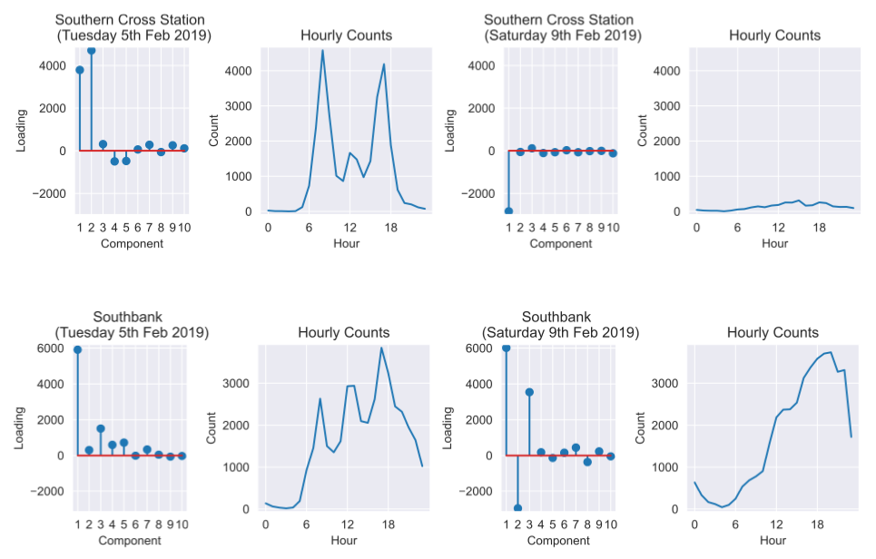
Results (iii): Evolution of Usage Patterns
Southern Cross
Commuting is largest driver of footfall; still lower than pre-pandemic levels
Additional footfall might be encouraged by making it attractive to commuters
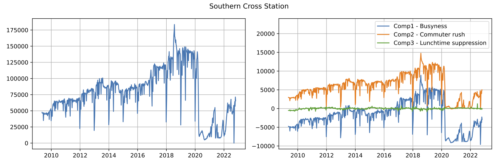
Results (iv): Evolution of Usage Patterns
Lygon St
Steady decline in busyness, but a gradual increase in commuting?
Possible transition towards a more commuting-oriented area
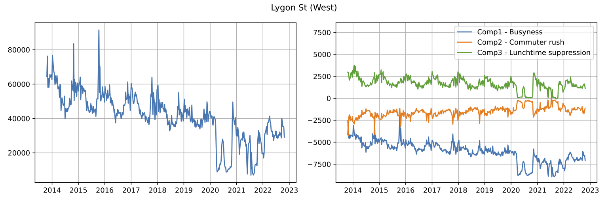
Part 1: Summary
Application of PCA to investigate (spatio-)temporal footfall trends
Drawbacks: validation of activities; equity in sensor location
Opportunities to:
better understand use of the build environment
explore evolution of activities over time
cluster places / times based on activity structure
explore relationships between components
Many implications for policy making
Part 2
Predicting Pedestrian Counts using Machine Learning
Molly Asher, Yannick Oswald, Nick Malleson
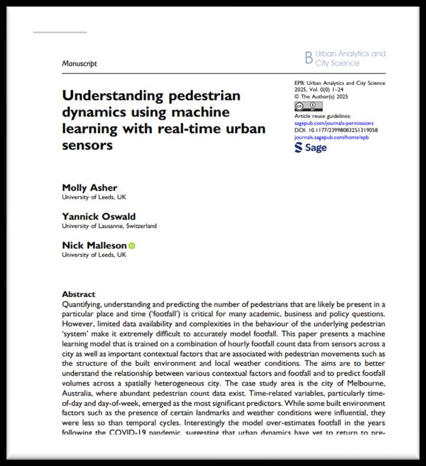
Paper
Asher, M., Y. Oswald, and N. Malleson (2025). Understanding Pedestrian Dynamics Using Machine Learning with Real-Time Urban Sensors. Environment and Planning B: Urban Analytics and City Science 52(8). DOI: 10.1177/23998083251319058
Modelling Overview
Aim: use sensor data to build a predictive model which can estimate the number of people who will be at any location in the city at any given time
To train a model, we need both:
Data on what we wanted to predict (dependent variable): number of pedestrians at different locations over time
Data on which to base the predictions (explanatory variables):
time (hour, day, month, year)
weather conditions
local built environment
connectedness of location (road betweenness)
.. anything else that might drive footfall?
All available in the Melbourne Open Data Portal
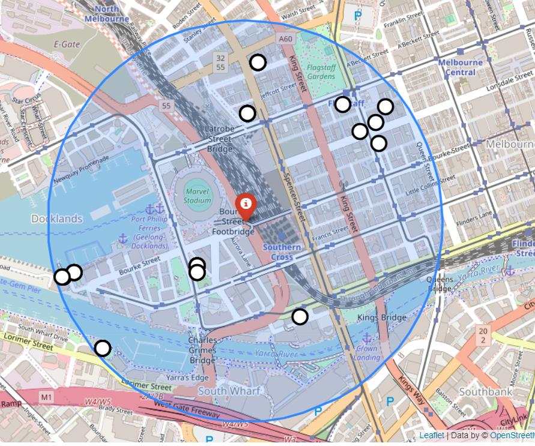
Linking sensors to their surroundings
Spatial features are counted within a buffer zone around each sensor
Buildings, landmarks, street infrastructure, car parks, …
Combined with time and weather to give 80 explanatory variables
Melbourne Open Data
| Sensor ID | Hour of day | Day of week | Month of year | Nearby trees | Nearby offices | Nearby schools | Rainfall? | Pedestrian count |
|---|---|---|---|---|---|---|---|---|
| 1 | 1 | 1 | 7 | 15 | 1 | 0 | Yes | 25 |
| 1 | 2 | 1 | 7 | 15 | 1 | 0 | No | 27 |
| 2 | 1 | 1 | 7 | 2 | 8 | 1 | Yes | 67 |
| 2 | 2 | 1 | 7 | 2 | 8 | 1 | Yes | 69 |
| …80 explanatory variables… | ? | |||||||
Train on the known counts; predict the unknown ones
Model selection
Considered two machine learning models (compared against linear regression)
Evaluated accuracy using 10-fold cross-validation
| Model | MAE | RMSE |
|---|---|---|
| Random Forest regression | 89.88 | 179.62 |
| XGBoost | 121.35 | 207.40 |
| Linear regression | 268.40 | 370.54 |
Random forest regressor selected as best performing model
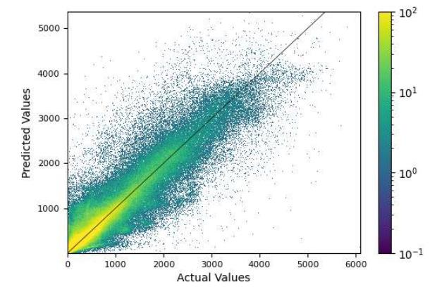
Model evaluation
Predicted counts-per-hour of pedestrians plotted against actual values from the sensor data
Most predictions fall around the diagonal (x=y), giving confidence the model is not biased towards smaller or larger counts
MAE = 89.88; RMSE = 179.62
Model evaluation: spatial
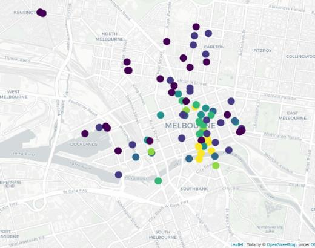
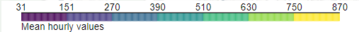
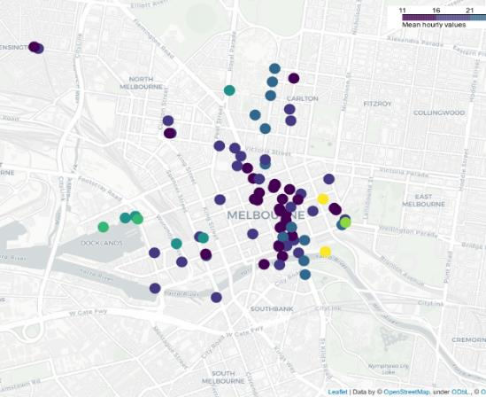
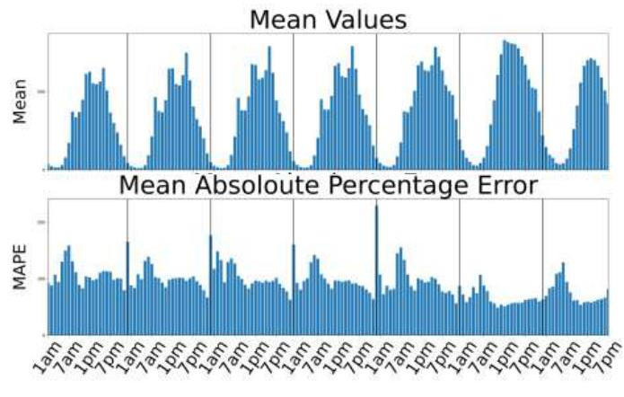
Model evaluation: temporal
Mean counts reflect typical city centre patterns
Largest errors at night
Small counts → large percentage errors
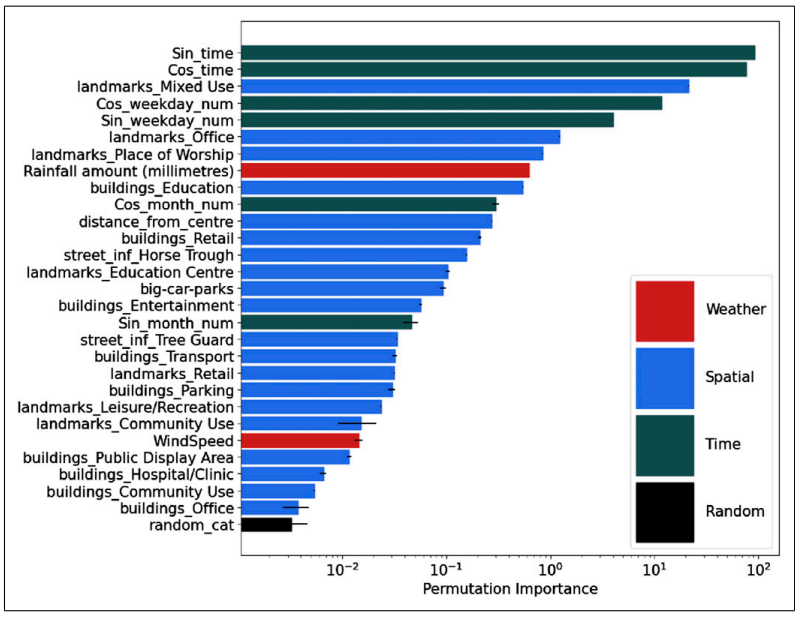
Feature importance
Ranks each feature's contribution to the prediction
Time variables dominate
hour of day, then day of week
Spatial variables matter, but much less
mixed-use and office landmarks are the strongest
Weather variables are weaker still
rainfall is the most important of them
Evaluating events - model prediction v.s. reality
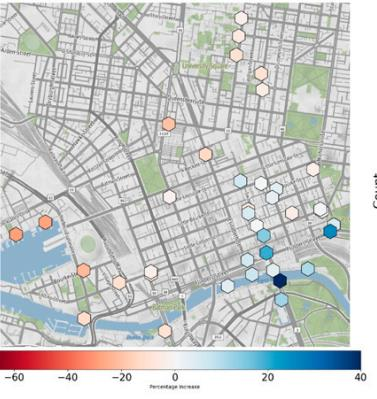
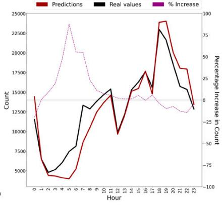
E.g. the Anzac Day Parade:
5% more footfall in the whole city over 24h
72% more footfall from 3-10am
128% more footfall at a sensor in the south-east, near the parade
Part 2: Summary
This model can be used to:
predict the number of pedestrians in time and space at un-sampled locations under different conditions
better understand the impact of the built environment and other contextual factors on pedestrian counts
evaluate the success of past events
Model performs reasonably well overall, but there are spatial and temporal variations in prediction error
Part 3
Simulating crowds in real time: agent-based modelling and data assimilation
Keiran Suchak, Minh Kieu, Yannick Oswald, Jon Ward, Dan Tang, Patricia Ternes, Robert Clay, Nick Malleson
Work conducted under the ERC-funded
DUST project
(Data Assimilation for Agent-Based Models):
https://urban-analytics.github.io/dust/
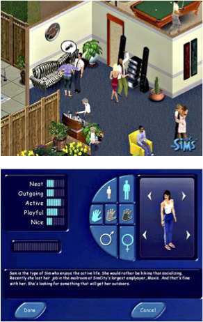
Introduction to ABM
Systems are driven by individuals
Agent-Based Modelling
Rather than controlling from the top, try to represent the individuals
Account for system behaviour directly
Autonomous, interacting agents represent individuals or groups
Situated in a virtual environment
Real Time Crowd Modelling
We can track individuals (anonymously?) as they move through busy public spaces
We can simulate crowds quite well, but our simulated crowd will inevitably diverge from the real one
Can we update our crowd model in response to real-time data?
Why we need Data Assimilation
Complex models will always diverge
(due to inherent uncertainties in inputs, parameter values, model structure, etc.)
Possible Solution: Data Assimilation
Used in meteorology and hydrology to bring models closer to reality. Combines:
Noisy, real-world observations
Model estimates of the system state
Data assimilation v.s. calibration
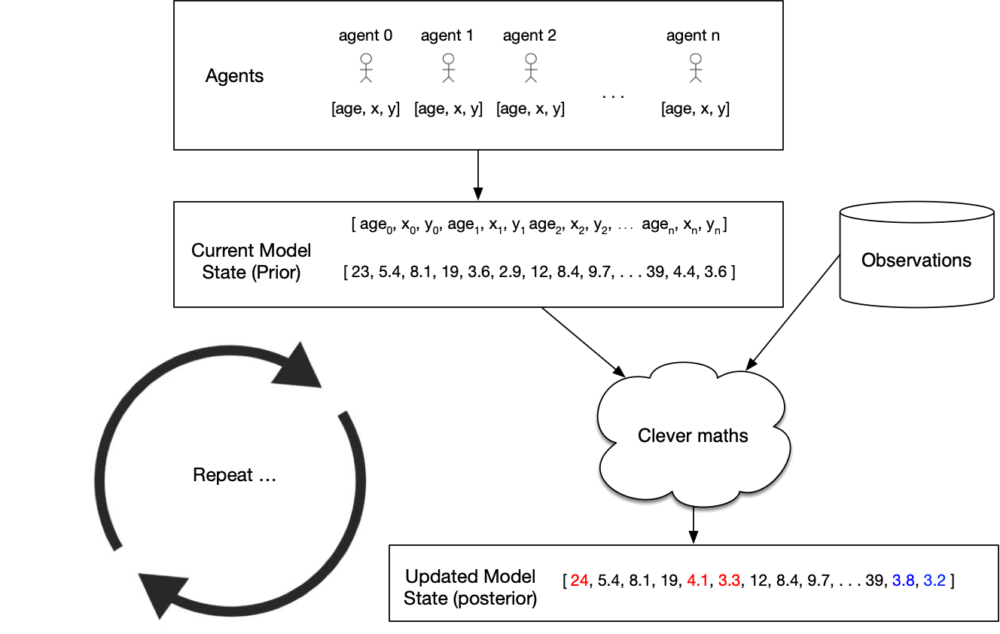
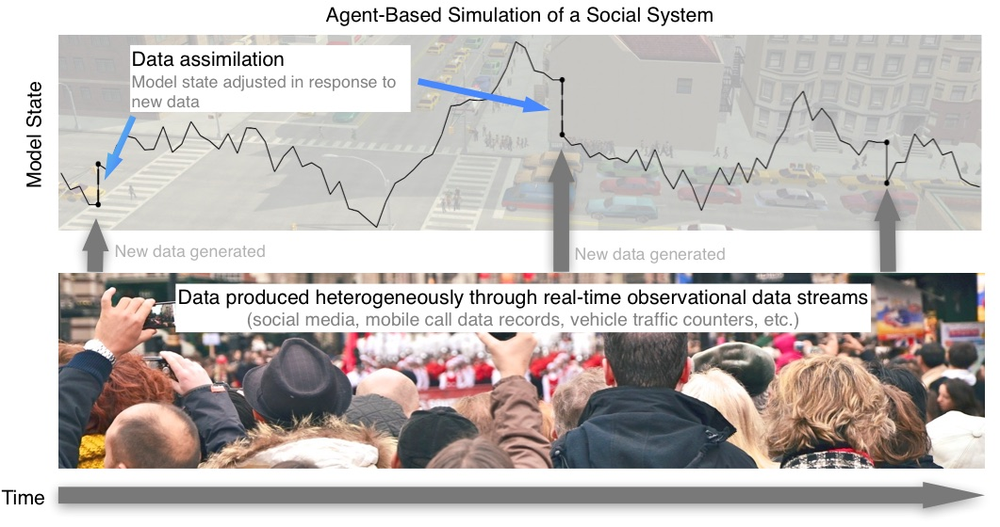
Challenges for using DA with ABMs
Model size
10,000 agents * 5 variables = 50,000 distinct parameters
Agent behaviour
Agent's have goals, needs, etc., so can't be arbitrarily adjusted
Assumptions and parameter types
Maths typically developed for continuous parameters and assume normal distributions
Categorical parameters can be a big problem
... but, at least, some of these problems are shared by climate models
Some DA Methods
Basic idea: estimate the posterior model state
Particle Filter
Create loads of individual model 'particles' run them simultaneously.
Remove those that don't represent the observations well; duplicate those that do
Advantage: very few assumptions (Gaussian distributions etc.)
Kalman Filter
Many flavours: Ensemble, Unscented, ...
Maintain a smaller ensemble and update the particles more intelligently
Efficient but has stronger assumptions (although they might work OK anyway...)
4DVar
This is popular in meteorology but I don't know anything about it...
Attempt 1: a Particle Filter
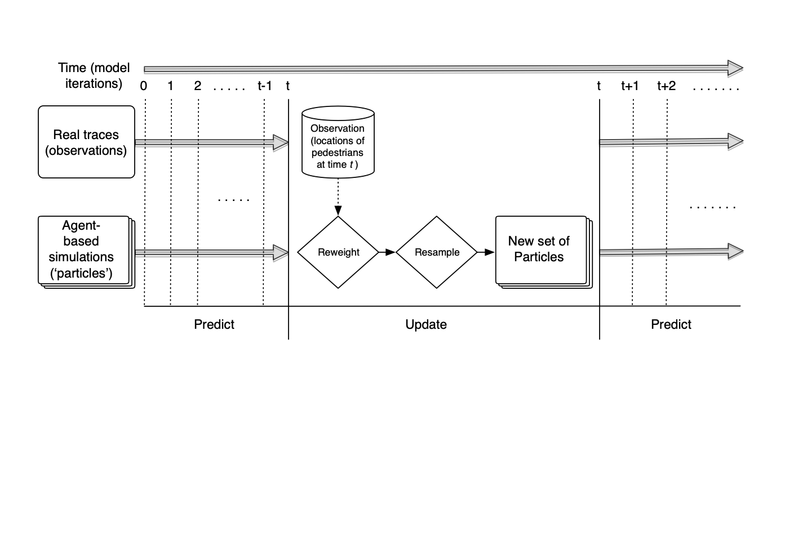
Crowd Simulation with a Particle Filter
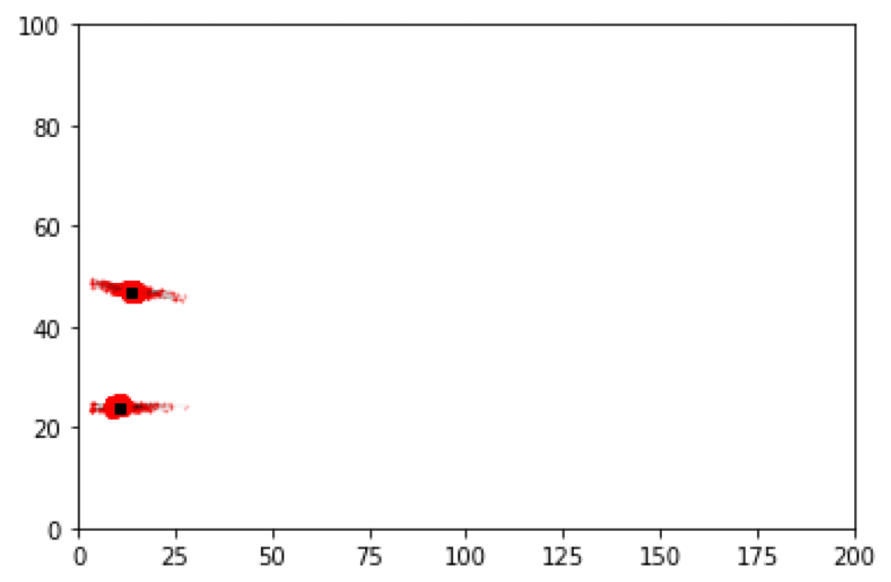
Particle Filter Results
Box Environment: More particles = lower error
Exponential increase in complexity
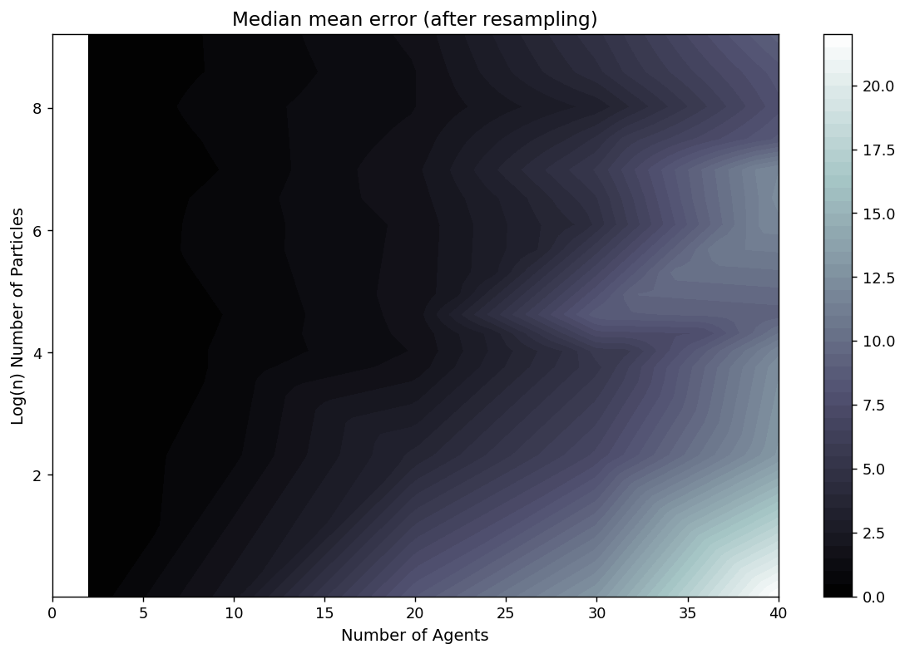
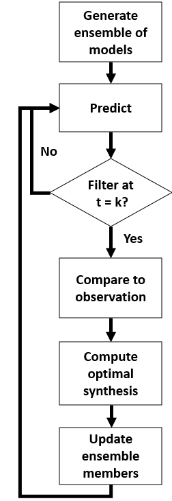
Attempt 2: Ensemble Kalman Filter (EnKF)
More complicated, and has stronger assumptions, but can update the model state (including categorical parameters) directly
\( \hat{X} = X + K \left( D - H X \right) \)
Current state estimate (\(X\)) updated with new information (\(\hat{X}\))
\(K\) (Kalman gain) balances importance of new data (\(D\)) v.s. current prediction.
\(H X\): prediction transformed into the same space as the observed data (e.g. aggregate observations and individual agents)
More realistic simulations:
Grand Central Terminal (New York)
Pedestrian traces data
B. Zhou, X. Wang and X. Tang. (2012) Understanding Collective Crowd Behaviors: Learning a Mixture Model of Dynamic Pedestrian-Agents. In Proceedings of IEEE Conference on Computer Vision and Pattern Recognition (CVPR) 2012
http://www.ee.cuhk.edu.hk/~xgwang/grandcentral.html
Cleaned and prepared by Ternes et al. (2021).
Pedestrian simulation: EnKF Results
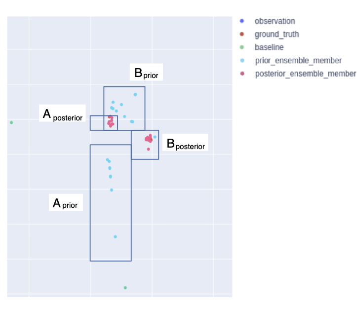
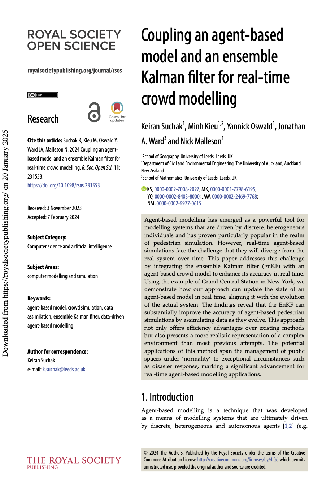
Part 3: Summary
Particle filter struggled (so many agents with so many destination choices)
But there is an opportunity to develop more nuanced filters
EnKF performed very well
Next steps: scale up to larger/more complicated crowds and use a more advanced crowd model.
Transformative potential of "live" (Swarup and Mortveit, 2020) simulations
Combine up-to-date, diverse datasets and create accurate predictions using "all the available information" (Talagrand, 1991)
Part 4
Opportunities for integrating large language models with agent-based models
Context
Agent behaviours typically based on historical precedents
Behavioural theories
Empirical evidence
Commonly implemented using:
pre-defined rules
deliberative frameworks
black box statistical models
These work well when the system is mostly in equilibrium, and/or when we have seen a behaviour in the past
Context
BUT: what happens if there is a catastrophic, systemic change?
2008 global financial crisis
COVID
Climate change
Models based on historical behavioural assumptions can break down
We (researchers) cannot hope to predict these events, nor how people will behave afterwards
Example: burglary simulation
What happens if the agents can't leave the house?
Large Language Models (LLMs)
Early evidence suggests that large-language models (LLMs) can be used to represent a wide range of human behaviours
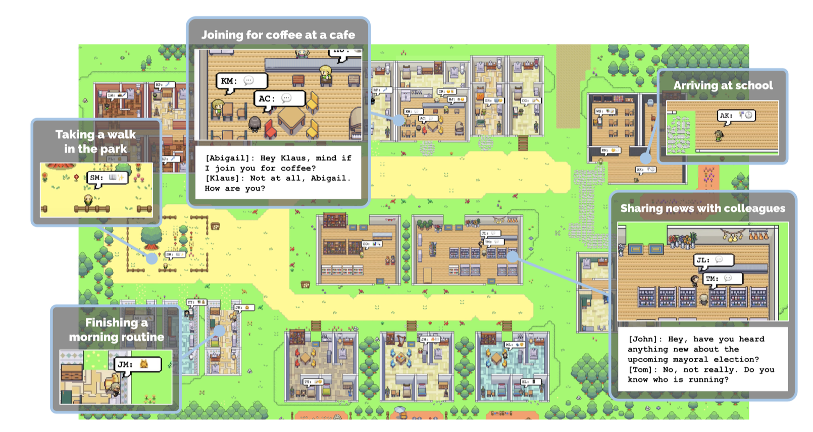
Already a flurry of activity in LLM-backed ABMs
E.g. METAAGENTS, AgentSociety, Shachi, Concordia, MetaGPT ... and others ...
But efforts are emerging prototypes.
Limited peer review
Vision
Agents backed by foundation models
There is growing evidence that LLMs can respond to prompts in 'believable', 'human-like' ways
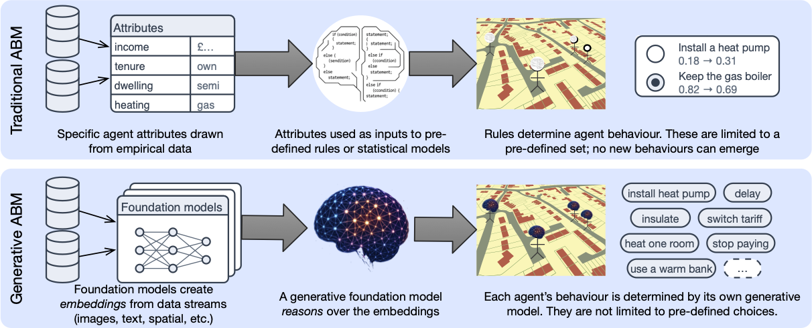
(some) Challenges (i)
Behavioural realism
LLM-driven behaviour could be persuasive but inaccurate
How do we manage the inevitable biases that will come from ingesting Internet data in training?
Environmental adaptability
Agent reasoning might be unbounded, but their actions are limited by the simulation environment
What if my burglar agents wanted to target commercial buildings?
What if a household agent wants to visit a 'warm bank'?

(some) Challenges (ii)
Environment perception
LLMs can only operate on text. Leads to highly simplified contextual descriptions.
Operational challenges
Computational complexity, validation (data leakage), calibration
LLMs have 'seen' most major historical events, so how can we validate?
Part 4: Summary
ABMs will struggle to represent agent behaviours in unprecedented situations
Foundation models (LLMs, GeoFMs) offer a potential solution; allowing agents to behave in reasonable ways in novel situations
Significant technical and methodological challenges remain
Part 5
Briefly: Geospatial Foundation Models
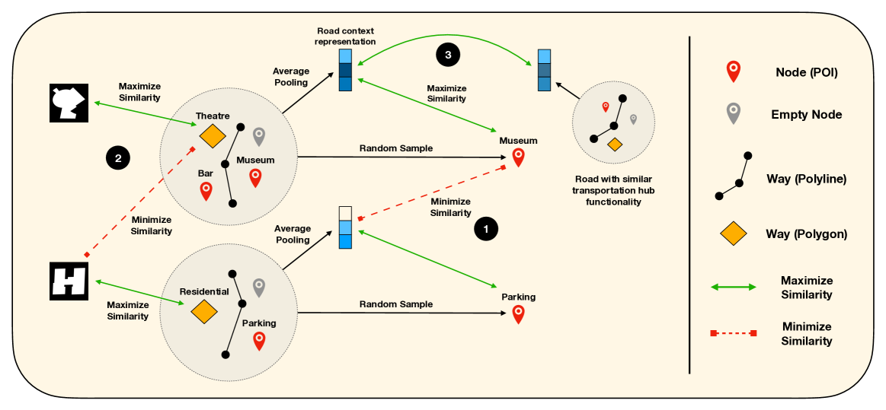
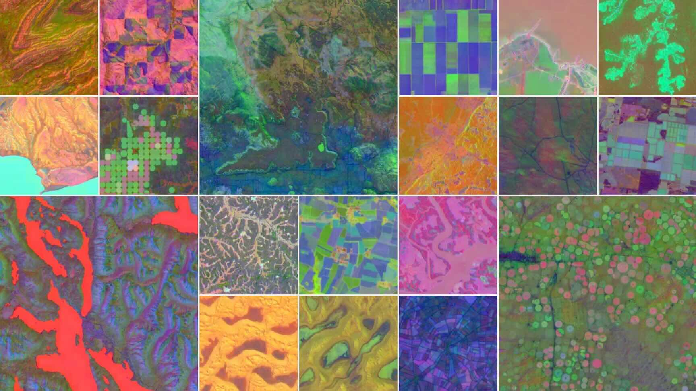
Geospatial Foundation Models
Foundation models trained on spatial data
E.g. UrbanCLIP, CityFM, GeoGPT..
Think "an LLM for space"
They create embeddings for a place:
A (long) vector of numbers describing a place/word/thing, where different parts of the vector describe different aspects, and similar things sit close together
Place embeddings capture spatial structure and scale; used for advanced spatial reasoning.
Example: Image embeddings in Amsterdam
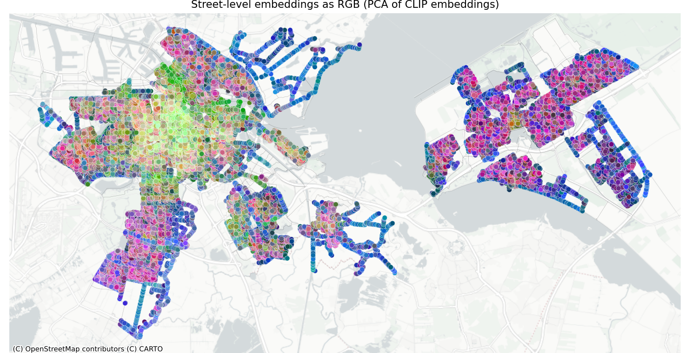
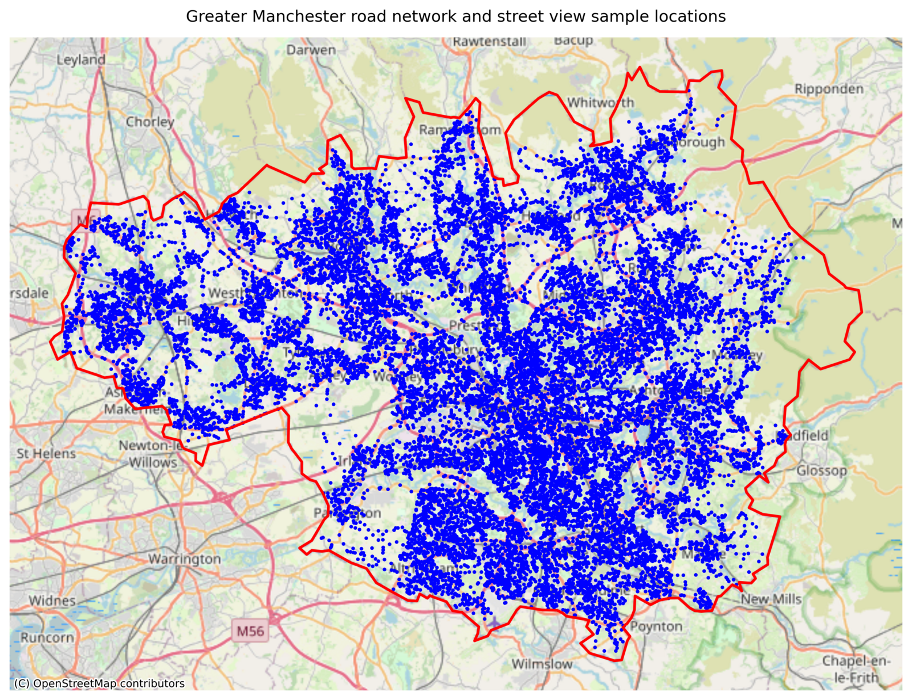
Example: how much deprivation is visible?
Greater Manchester, UK; 2025 IMD at LSOA level (1,702 neighbourhoods)
Street View: 18,897 points sampled on the OSM road network, 4 images each → ~75,600 images
Method: CLIP embeddings (512-dim) median-pooled to the LSOA; XGBoost predicts IMD rank
Compared against AlphaEarth satellite embeddings (64-dim)
Asher, Comber, Golzari Osguie, Bui Quang, Kieu & Malleson (2026), Estimating Visible Deprivation through the Analysis of Street View Image Embeddings
Street view v.s. satellite
How much IMD-rank variance does each source explain?
~68%
Street View (CLIP)
512-dim · test R² = 0.68
~33%
Satellite (AlphaEarth)
64-dim · test R² = 0.32
Ground-level cues are not readily visible from above
Off-the-shelf embeddings, no task-specific training
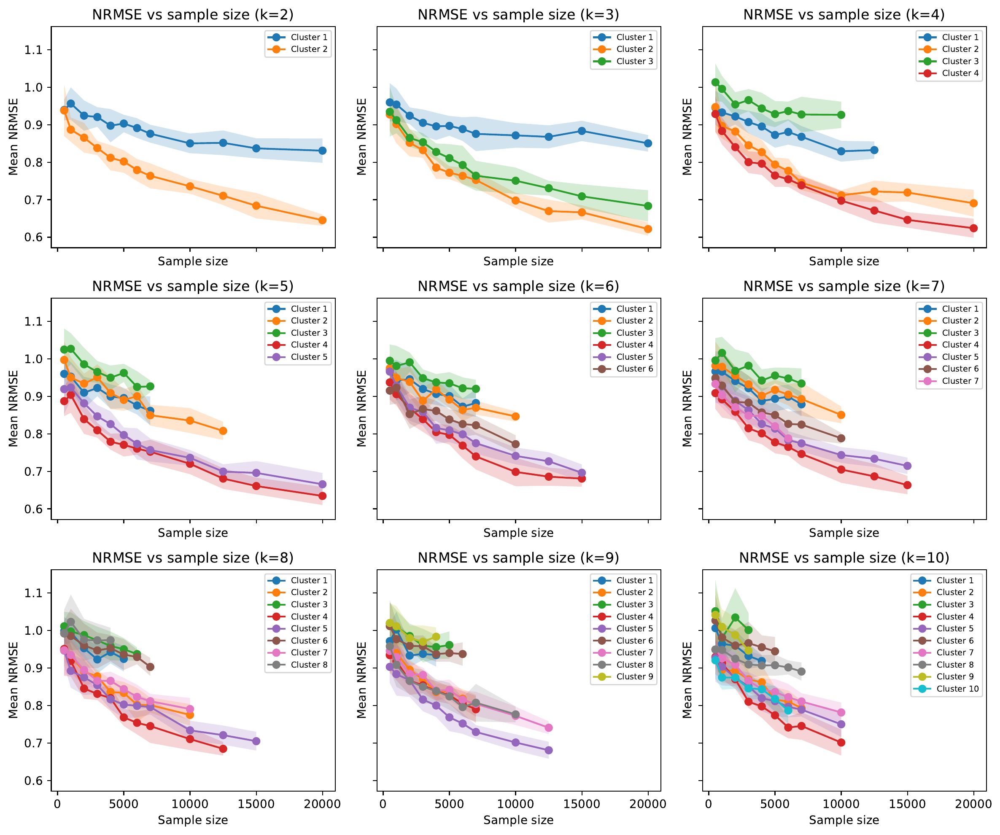
'Residential' scenes carry the strongest signal
Partition the image embeddings into k = 5 clusters of visually similar scenes (k-means), then fit a model per cluster
| Cluster (scene) | R² |
|---|---|
| 4 — houses | 0.60 |
| 5 — houses | 0.57 |
| 2 — commercial/industrial | 0.37 |
| 1 — greenery | 0.32 |
| 3 — rural roads | 0.07 |
| Global (all images) | 0.68 |
Summary
PCA to separate footfall into (recognisable) components – busyness, commuting, lunchtime – and tracks how places change
Machine learning predicts counts at unsampled places and times; time dominates, and the residuals can be used to evaluate events
ABMs with data assimilation keeps a simulation aligned to a real crowd in real time
LLMs could give agents behaviour that survives unprecedented situations – but many challenges
Geospatial foundation models turn places into embeddings: potentially an extremely powerful way to represent space
Geospatial Systems CDT Annual Assembly, 7-8 September, Newcastle University.
Modelling Urban Dynamics with Agents, Machine Learning, and Foundation Models
Nick Malleson, University of Leeds, UK
n.s.malleson@leeds.ac.uk
Slides available at:
https:/nickmalleson.github.io/presentations.html
Thanks: Jack Liddle, Wenhua Jiang, Molly Asher, Yannick Oswald, Keiran Suchak, Minh Kieu, Patricia Ternes, Robert Clay, Jonathan Ward, Dan Tang, Kevin Minors, Andrew West, Thanh Bui Quang, Naomi Golzari Osguie, Alison Heppenstall, Andrew Crooks, Ed Manley, Alexis Comber